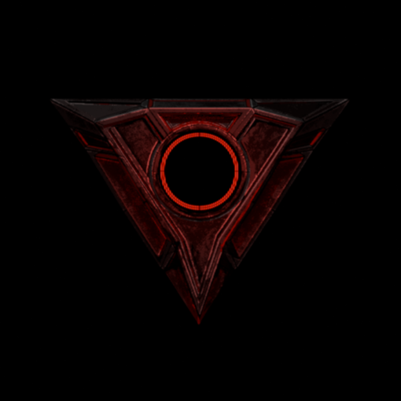

this designation is permanent. it cannot be changed, surrendered, or reissued.
_Welcome to my website where everything is released, documented and updated. Feel free to explore around and grab yourself a game to play and see more things.
